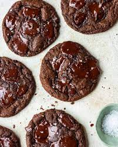

Cookies

Double Chocolate Chip Cookies
Indulge your taste buds with our irresistible Double Chocolate Chip Cookies. Crafted with precision and passion,
these delectable treats are a chocolate lover's dream. Each bite offers a perfect balance of rich cocoa flavor
and the sweet goodness of premium chocolate chips. The texture is wonderfully chewy on the inside with a
satisfying crunch on the outside, creating a symphony of textures that will leave you craving more. Whether
enjoyed with a glass of milk, shared with friends, or savored in solitude, our Double Chocolate Chip Cookies are
a delightful and decadent experience that elevates the simple joy of cookie indulgence. Treat yourself to the
ultimate chocolate escape with every bite of these heavenly cookies.
Ingredients
- 3 cups butternut squash puree (cooked and mashed)
- 24 ounces cream cheese, softened
- 1 cup granulated sugar
- 1/2 cup brown sugar, packed
- 4 large eggs
- 1 teaspoon vanilla extract
- 1/2 teaspoon ground cinnamon
- 1/4 teaspoon ground nutmeg
- 1/4 teaspoon ground ginger
- 1/4 teaspoon salt
Steps
- Preheat your oven to 325°F (163°C) and grease a 9-inch springform pan.
- In a bowl, combine graham cracker crumbs, melted butter, sugar, and ground cinnamon. Press the mixture into
the bottom of the prepared pan to form an even crust.
- Bake the crust in the preheated oven for 10 minutes. Remove and allow it to cool while you prepare the
filling.
- In a large bowl, beat the softened cream cheese until smooth. Add the butternut squash puree, granulated
sugar, brown sugar, eggs, vanilla extract, cinnamon, nutmeg, ginger, and salt. Mix until well combined.
- Pour the butternut squash cheesecake filling over the cooled crust, spreading it evenly.
- Bake in the preheated oven for 60-70 minutes or until the center is set. The edges should be slightly
golden.
- Allow the cheesecake to cool in the pan, then refrigerate for at least 4 hours or overnight to set.
- Once chilled, remove from the springform pan, slice, and serve. Optionally, drizzle with caramel sauce, add
a dollop of whipped cream, or sprinkle with chopped nuts for a delightful finish.
- Allow the cookies to cool on the baking sheets for a few minutes before transferring them to wire racks to
cool completely.